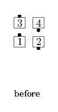
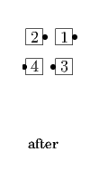
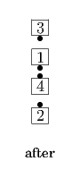
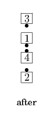
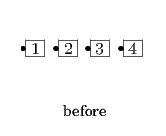
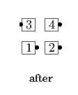
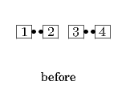
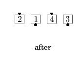
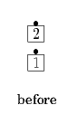

Single Calls
The calls in this section are all variations on other calls with similar names. In these calls, each dancer performs an action similar to what two dancers would be doing in the original call. They are "half size" versions of the original calls, involving half as many dancers (4 instead of 8, or 2 instead of 4).
Note that there are other calls that have a similar relationship (e.g., "Single Wheel" is the 2-dancer version of Wheel and Deal), but there are also calls with names beginning with the word "Single" that do not relate to another call in the same way (e.g., "Single Circle to a Wave"). Refer to the definition of each individual call to find out its meaning. Also note that the two-word combination "Single File" has a different meaning.
Single Checkmate
From a 2x2 formation: Leaders Box Circulate twice and 1/4 In (as in Box Transfer) as Trailers Box Circulate, 1/4 In, and Box Circulate. Ends in a 2x2. This call cannot be fractionalized.
 
Single Ferris Wheel
From a Mini-Wave Box or applicable 2x2 T-Bone: Leaders Single Wheel; Trailers Extend and Single Wheel. A Mini-Wave Box ends in Facing Tandems. This can be thought of as a Follow Thru and Roll.
 

Single Polly Wally
From a General Column of 4: Ends turn 1/4 to put their left shoulder toward the center of the column, Step Ahead, turn another 1/4 in their initial turning direction, and adjust to end in a 2x2 formation.
Centers turn 1/4 to put their left shoulder toward the center of the column, Step Ahead, turn 1/4 to put their left shoulder toward the center, and Step Ahead to become Lead Belles in a 2x2 formation.
 
A Reverse Single Polly Wally is the mirror image of Single Polly Wally. Everyone starts by putting their right shoulder toward the center of the column.
Single Rotary Spin
From a Single Eight Chain Thru: Right Pull By; centers Left Touch 3/4 while the ends 3/4 Left (turn in place to the left for 3/4 of a turn). Ends in a R-H Ocean Wave.
 
Single Turn to a Line
From a General Tandem (Column of 2): Leaders face right, Trailers face left; Step Thru; all face again in their initial turning direction (as in Turn and Deal) to end facing opposite to their initial direction in a couple or mini-wave. This call cannot be fractionalized.


A Reverse Single Turn to a Line is the mirror image of Single Turn to a Line. The Leaders start by facing left, the Trailers start by facing right.
© Copyright 2004-2017 Vic Ceder and CALLERLAB Inc., The International Association of Square Dance Callers. Permission to reprint, republish, and create derivative works without royalty is hereby granted, provided this notice appears. Publication on the Internet of derivative works without royalty is hereby granted provided this notice appears. Permission to quote parts or all of this document without royalty is hereby granted, provided this notice is included. Information contained herein shall not be changed nor revised in any derivation or publication.